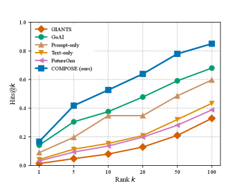

Builds a dataset of paired scientific-formal graphs from arXiv and Mathlib to generate future theorem-like claims.
Abstract
A plausible future mathematical claim must satisfy two constraints: it should follow the direction of prior work and respect the formal dependencies that constrain what can validly follow. Existing approaches typically model only one of these sources, producing claims that are either weakly grounded or insufficiently motivated. We introduce grounded future mathematical generation, where the goal is to generate a plausible future theorem-like claim for an anchor paper using two complementary sources of context: its scientific citation graph and aligned formal theorem dependency graph. To address this setting, we propose COMPOSE, a dual-graph framework that conditions a language model on both scientific citation context and formal theorem structure. To support this setting, we construct a dataset of 108K paired scientific-formal graph examples from arXiv and Mathlib, together with a benchmark of 47K future papers from 2024–2025. Experiments show that COMPOSE outperforms strong baselines on retrieval to real future papers and achieves the best overall performance under LLM-judge evaluation, producing more grounded and mathematically richer outputs. These results show that future mathematical generation benefits from combining scientific context with formal structure. Project page is available at https://david-busbib.github.io/COMPOSE-page/.
Problem
Generating plausible future mathematical theorems requires both following the research trajectory of prior work and respecting formal logical dependencies. Existing approaches model only one of these sources, producing claims that are either weakly grounded or insufficiently motivated.
Approach
COMPOSE is a dual-graph framework that conditions a language model on both a scientific citation graph and an aligned formal theorem dependency graph from Lean's Mathlib. A dual-encoder GNN architecture jointly encodes both graphs, fuses them via cross-attention, and passes the result as conditioning to a language model decoder. The authors construct a dataset of 108K paired scientific-formal graph examples from arXiv and Mathlib.
Results
On a benchmark of 47K future papers from 2024-2025, COMPOSE outperforms baselines on retrieval to real future papers (Hit@k) and achieves the best overall performance under LLM-judge evaluation, producing more grounded and mathematically richer outputs than citation-only or formal-only methods.

Figure 3 : Hit@k comparison across models from k=1 to 100 .